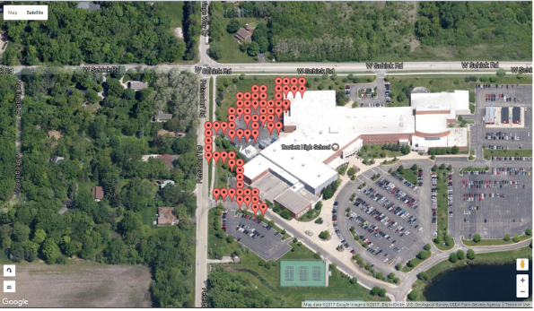
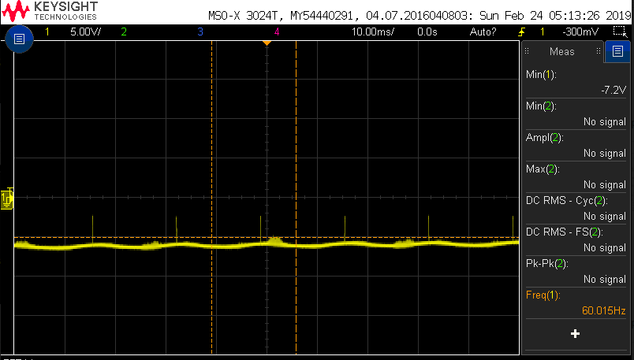
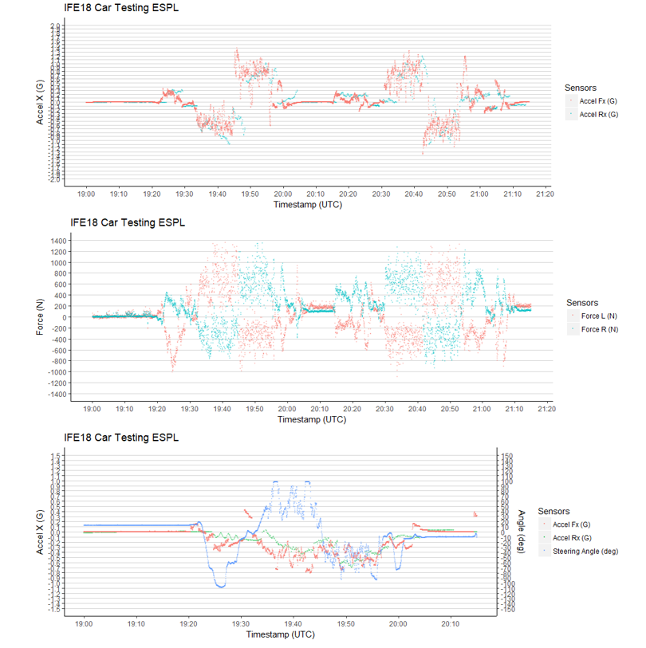

S.T.E.V.E.
August 2016 - Ongoing
S.T.E.V.E., also known as the Self Teaching Elevated Vehicle Entity, is a drone that I designed with another student during high school whose primary purpose was to be an aid during diaster relief. This was a design project that took the entirety of a year and comprises of many features, which are detailed below. This project is still ongoing and progress can be tracked here .
The goal of the entire project was to create an autonomous drone that could serve as an aid immediately following extreme situations such as natural disasters. The drone is meant to be a means of surveying a possibily dangerous region before sending in a first responder. To accomplish this, we made a fully featured drone with a custom flight controller, camera to view the surroundings and live stream it to a virtual reality headset (to stream back to a base station so that they can see what the enviroment is like), speaker with onboard AI to communicate to a victim of a natural disaster, and sensors to make sure it is not flying into any object as well as update location.
Flight controller: The most crucial part of this project was the custom flight controller. In most drone builds, it is easiest to buy an off-the-shelf flight controller that takes care of all the flight algorithms for you and all you have to do is plug in your motors and battery to get it working. However, we thought it would be better as a learning experience if we implemented the flight controller on our own from scratch. We did this using an Arduino UNO as our microcontroller and a gyroscope/accelerometer as our Inertial Measurement Unit (IMU). We used an MPU-6050 for the gyroscope/accelerometer. After this, we used a PID controller to realize our flight controller. This took a bulk of our school year and ultimately ended up being a success, as we were able to fly the drone at the end of the semester.

Initial proof-of-concept calculations for PID controller
Camera and Virtual Reality Headset: The camera was interfaced on a Raspberry Pi 3. This was done because with all of our focus on the flight controller, the Raspberry Pi's included code to get the camera running expedited our production time. Getting the camera to output a video feed was very easy, but we wanted to go even further and interface a virtual reality headset. We were able to exploit VLC Media player to prove the concept of live streaming a video feed pretty easily, but the problem was the virtual reality. We developed an app that allowed us to prototype Google Cardboard applications. We did not reach the end goal of live streaming to the headset, but all of the pieces are in place and with more time we could absolutely get the interface working.
Speaker and AI: Since we used a Raspberry Pi for all non-flight critical functions, it was extremely easy to add a speaker to the Pi because there is an audio out jack on the Pi. The initial thought was to use simple if-else constructs and hard-code the speaker outputs (i.e. "Help is on the way"), but then we had the idea of using IBM AI APIs to get a natural language output from the Raspberry Pi. After struggling for a few weeks with the IBM documentation, we contacted them and they sent us a sample Android app that used their APIs. After this, it was easy to link this with the Raspberry Pi and output it through the speaker. We coded some very simple outputs and trained the AI to be as helpful as possible in the relevant situation.
Object detection and location updates: One fundamental aspect of a drone is to... not fly into nearby objects. While real drones use laser-detection to detect nearby objects, those sensors are expensive and difficult to get working, so we chose to use ultrasonic sensors. Our end goal was 6 sensors in each axis, 3 in each direction (for instance we would have 3 pointing directly upwards and 3 pointing directly downwards, thus covering the z-axis). We used the MUX shield, which adds 27 additional inputs to the Arduino and we ended up writing our own custom drivers for all the ultrasonic values. It fully worked, but we did not get to interface it with the rest of the drone. However, given more time, we could have easily gotten this functionality working. We also added an off-the-shelf GPS module, which was capable of logging the coordinates. Combined with the ultrasonic sensor data, we have 3D-coordinates.

Overlay of GPS location data for a few test flights near school
Flying forward: This project was ultimately a success. It was presented to Navistar at an engineering expo and met with high praise. This project is still in progress, with plans to remove the entire top enclosure and replace it with a custom PCB.
HackMe
February - Ongoing
The HackMe project was conceived to bring a previously obscure field right into the consumer's hands: Electroencephalography (EEG waves). While normally used for diagnosing brain disorders (such as epilepsy and seizure-related disorders), there is actually a plethora of information to glean from these EEG waves. In general, everyone's brain will generate miniscule electrical impulses (extremely miniscule, on the order of 50microvolts). By finding the frequency of these waves, we can characterize a person's state. We can go further and apply even more advanced mathematics to figure out the location of these waves. Our project was the HackMe beanie. This beanie, if further developed, would house a small custom PCB that does all the wave extraction and signal processing. After the waves are fully quantized, we can begin doing exciting things like mapping these waves to corresponding thoughts by using advanced machine learning algorithms and techniques. After enough mappings, thoughts can then be corresponded directly to thoughts through the use of embedded technology and the internet of things (IoT). For instance, if the user wants to turn up the thermostat, the action is complete as soon as the user thinks it because the wave will have been mapped to that action. The project is split up into several parts: The pre-processing side (Taking the signal from the brain all the way to quantizing it), processing (database side), post-processing (advanced analysis techniques on the wave), and the user integration (the website and the IoT interface). In addition, our project aims to be one of the first offering truly open source, anonymous, very readable EEG-wave data for use in studies or any condition. We had great detail in finding resources to start
Wave extraction and Pre-processing: The fundamental problem with a wave as small as the electrical ones from the exterior of the brain is how miniscule they are. The waves are measured from the brain by using non-invasive electrodes. They are then fed into a 24 bit ADC (Analog-to-Digital converter) to accurately read the incoming waves. Once on a microcontroller, these waves can be stored and sent anywhere. For HackIllinois 2019, we had a Raspberry Pi 3 take these signals and upload them to a database.

Raw reading of the EEG headset output
To host our data, we chose to use an Azure database as we get free access to it (college students get an ample amount of free credits). We made 2 distinct databases: One for an open-source log of EEG data, and another for a customer's personal data to be logged. When we initially got brainwave data, we wanted to ensure that the data was valid, so we went looking for sample EEG-wave datasets to compare against. Unfortunately, we had an extremely tough time due to very poor file documentation and uobscure file formats. The idea was to make an open-source database for EEG-wave data that would be well-documented and easy to pull from. Other developers could then work on algorithms to better understand the data, as this is a relatively new field. In turn, the algorithms developed from the open-source set could be applied to the private user data to detect any anomalies, such as sleep and brain disorders.
Post-processing: This is done through Matlab, using some of their built in models. We initially used a linear classifier and are currently in progress developing a machine learning algorithm to better classify the data. After post processing is done, the type of wave which was encounted is pushed back to the database. Some of the most common EEG waves:
- Delta (3 Hz): Most commonly found in deep cycles of sleep.
- Theta (3.5 to 7 Hz): Most commonly found in children. Implies an abnormality in the person if they are an adult.
- Alpha (7.5 to 13 Hz): Most commonly found in people who are relaxing and is eradicated by any deep concentration.
- Beta: (14 - 38 Hz): Most commonly found in people who are thinking a lot of thoughts at once.
- Gamma: (38 - 42 Hz): Greater than the frequency of neuronal firing, gamma waves relate to processing of different brain areas at once.
The code is currently being ported over to Python.
Applications: We had 3 primary applications of the data: a website, an app, and an IoT application. The website and app were designed similar to a health portal, and allowed you to view you EEG-wave data at a glance. For our IoT application, we chose to correlate a mood to music. Once the algorithm on the database has output what kind of wave it is, we have it play a song from a specific playlist.
This project was entered in the 2019 Hackathon at the University of Illinois at Urbana-Champaign. It won Caterpillar's and Particle's Design Awards, and was overall a runner-up for the competition. More information about the competition can be found here .
IFE - 2017
I am an active member of Illini Formula Electric (IFE), where we design and build a formula-style electric car from scratch. The club is entirely student run. We are limited to 300V. In the summer we compete at the FSAE competition in several events. The battery that our car runs off of is comprised of 336 LiFePO4 cells that are wired together in a series-parallel combination that yields 300V and 175A overall. The competition rules require us to monitor the temperature and voltage of each battery cell. The old method of doing this was using the Elithion Proprietary Battery Management System (BMS). This system only runs on very old team laptops, which are archaic, cumbersome, and limited to a hardwire connection. As a freshman, I designed a PCB that could read data off the CAN bus and then output it over bluetooth to a laptop.
In addition, I also developed a GUI that was capable of outputting the data in realtime. This was done in C# using the .NET framework.

Graph of collected data and screenshot of developed GUI
IFE - 2018
After my first year on IFE, I got promoted to the leader of the Data Acquisition and Quantitative Analysis (DAQA) team, whose primary goal is to log data from all the sensors on the car, timestamp them, and then upload it to a server. It gathers data from 4 accelerometers, 30 strain gauges, a GPS, the position of the steering wheel, the coolant temperature, the brake pressure, the throttle and regen pedal potentiometer, CAN, hall effect sensors, and the voltage of the low voltage battery pack.
The final system is currently being worked on. We designed our system to be custom PCB shields that plug directly into a Raspberry Pi. There are 4 corner boards and 1 central board, which then all upload their data to our servers for later analysis.

Graph of collected data from preliminary testing
Project LD
After taking ECE 385, my interest in FPGAs and hardware acceleration has been peaked. For our final project, my partner and I decided to make an augmented reality assisted game similar to beer pong. Project LD is our attempt at Augmented Reality (AR) assisted beer pong (minus the beer). The project is named "Project LD", which is short for "Projects Legends Never Die", which is a nod to our professor, whose profile picture on our class website is the "Legends Never Die" meme. The goal was to track a bouncing ping pong ball using a camera in 3-dimensions in realtime and then superimpose the path of the bouncing ball on the video feed as well as superimpose the path that should have been taken to get the ball into the cup. We were able to get a successful 2D track of the ball's position and scale, but did not have time to work on the 3D track. For this project, we used the DE2-115 expansion board with the Altera Cyclone IV E FPGA. We were provided with the 1.3 megapixel camera module, and spent a majority of the project interfacing the camera with the FPGA. By the end of 2 weeks, we were able to have a fully functioning 1.3 megapixel camera outputting its feed via VGA to a computer monitor. In addition, we were able to interface the NIOS II E microcontroller as a System-on-chip to toggle the camera settings. We made heavy use of exposure, red gain, blue gain, and green gain settings to achieve the best picture quality we could. The tracking was done very similar to how the visual effects software Adobe After Effects achieves its 2D motion track: In After Effects, you choose the point you want to track, and it generates a small box on the screen. Frame-by-frame, it then tracks the change in position and scale by looking at the change in high contrast points within the box. We made an FPGA-module to do the exact same thing, except in realtime. It worked rather well, but could not keep the track if the ball was dropped. The reason for this is we need to add a module that accomplishes frame interpolation. Since a falling ball falls very fast relative to the frame, comparing the frame before the drop to the frame after the drop will show a large vertical change between frames. Frame interpolation will guess where the ball would have been between the frames, and would allow for a much better track.
The last leg of this project would have been exploiting constraints to get a 3D motion track with one camera. There are a few additional things we would have to do.
Here is a compilation of our progress through this project.
Project HoneyPot
This is a project inspired by a reddit post. The idea is to setup a server and then wait until bots on the internet try to break in by spamming the default usernames and passwords. Then, the attempted usernames and passwords and graphed to see which are the most frequent attempts. This project will be updated soon.
OCR and Dyslexia
As part of the 2018 ECE PULSE competition, me and 3 other group members interfaced a Tobii eye tracker with a C# application to assist those with dyslexia. This would operate by using OCR to analyze when someone is trying to read text on a computer screen and based on how long someone is looking at text, analyze if they are having trouble reading it. Then, it can take the data and then graph it. We were 2nd place runners up in the competition.
Wireless Charger
As part of our final project for ECE 110, my partner and I implemented a wireless charger from scratch to charge a smartphone. We utilized concepts from Physics 212 (Electricity and Magnetism) and ECE 210 (Analog Signal Processing). It primarily used the principle of a transformer to transmit the energy wirelessly. We used magnet wire to make the transmitter and reciever coils. The transmitter coil used was hooked up to a function generator which generated a sine wave. The reciever coil then took the signal and passed it through a full bridge rectifier to get a DC wave. Finally, it was passed into a voltage regulator to get 5V out. Unfortunately, the current output was only 400mA, which was enough to charge a phone (however, it was enough for the phone to pop up a message "Unrecognized device plugged in").